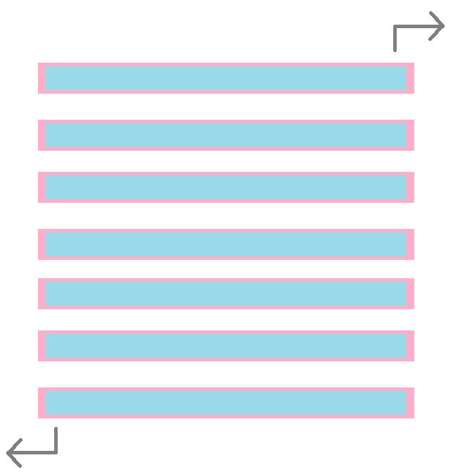

Abstract Data Types: Stacks and Queues
Stacks and queues are two types of abstract data types that you can use to store and retrieve data in different ways.
Stacks and queues are two types of abstract data types that you can use to store and retrieve data in different ways.

Disclaimer: this article assumes you already know the function of a max/min heap and the purpose of heapify().